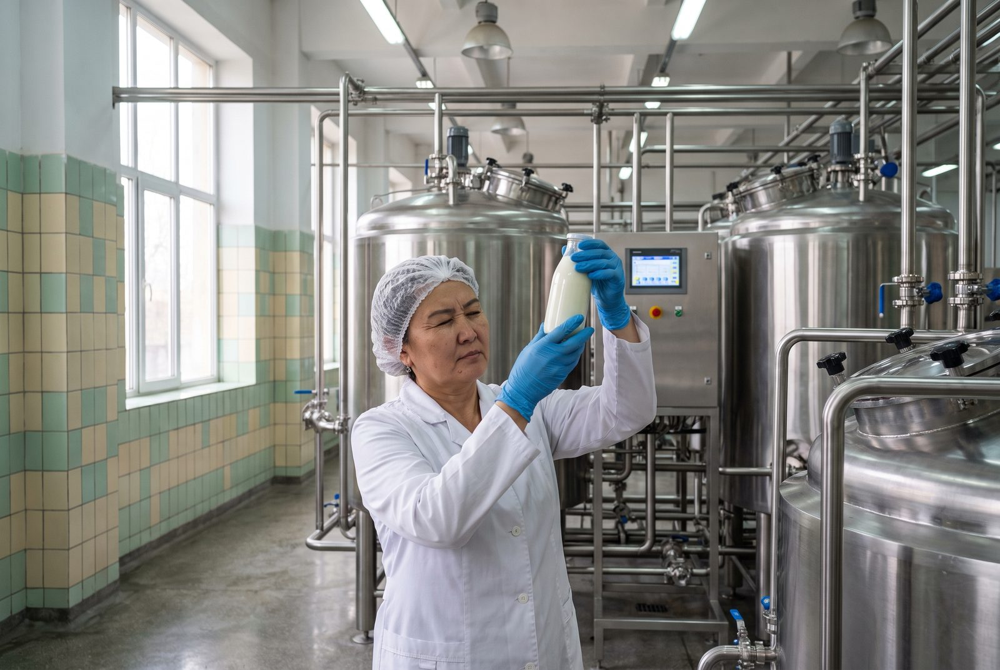

Home / About us
About the Combine
The Talas Dairy Processing Combine (Talas Süt Kombinatı) is Irad's largest dairy. We buy milk from more than 2,300 farms in the Talas valley, process it in Talas and sell it under the Talas Süt and Ak Bee names in Talas, Nurzhan and Iyık Janyl.
The cooperative
Owned by the farms that fill our tankers
When the city dairy was privatized in 1997, its shares were offered first to the farms that supplied it. More than nine hundred families pooled their savings as the Talas Valley Milk Cooperative (Talas Öröönü Süt Kooperativi), and by 2001 the cooperative owned the whole Combine.
Any farm that delivers milk to us for a full year can join. Members elect a board of eleven at the general meeting each April, the board appoints the director, and a share of each year's profit comes back to members as a bonus on every litre they delivered.
Most of our members are small: the average member farm keeps eight cows. We still collect from farms with three.
The Combine today
| Milk collected | up to 410 tonnes a day (summer), 240 in winter |
|---|---|
| Member farms | 2,340 |
| Herding families (kymyz) | 212, May to September |
| Collection points | 18 in the Talas valley, 3 at the foot of the pastures |
| Products | 22, sold under Talas Süt and Ak Bee |
| Staff | 930 at the Combine and on the routes |
| Sold in | 226 Bereke and Jıldız Market stores, bazaar dairy stalls, schools and hospitals |
Our history
Sixty-two years of milk
- 1964
The Talas city dairy opens beside the railway in the western industrial district, built to supply the growing city and the state farms' milk from the Virgin Lands years.
- 1972
A kymyz shop is added to supply the sanatoriums of the Iradi SSR with mare's milk from the state farms of the Talas Alatau.
- 1992
Through the siege of Talas the dairy keeps running on its own boilers, delivering what milk reaches the city to the hospitals and children's homes.
- 1997
The dairy is privatized. Supplying farms form the Talas Valley Milk Cooperative and buy the first shares.
- 2001
The cooperative owns the Combine outright. The first refrigerated collection points open in the villages.
- 2009
Pasteurized kymyz goes into glass bottles under the Ak Bee name and into city supermarkets for the first time.
- 2014
New fermentation hall for airan, qatiq and suzma; beet suzma goes into tubs.
- 2019
Our laboratory is rebuilt and tests every tanker for fat, protein, antibiotics and cell count before it is unloaded.
- 2022
We publish Products and Production, 1964–2022, the history of the Combine, written with retired staff.
- 2024
Sixty years in Talas. The anniversary is marked with a liturgy of thanksgiving and a milk-and-boorsok table for staff and member families.
- 2026
Beet suzma reaches Nurzhan; school milk returns to the Talas schools.
How we work
From the farm to the shop in a day

Collection
Our tankers run 46 routes every morning. Village collection points cool the evening milk to 4 °C overnight.
Testing
Every tanker is sampled at the gate. Milk with antibiotics is refused and the farm is visited by our vet the same week.
Processing
Milk is separated, pasteurized and cultured with starters the Combine has kept since the 1960s. Suzma is strained overnight in linen bags.
Delivery
Refrigerated vans leave from 4 in the morning for the shops of Talas, and by night for Nurzhan and Iyık Janyl.
Our people